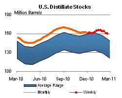

Released: February 24, 2011
Next Release: March 2, 2011
Market response to the WTI-Brent spread is constrained by logistical challenges
West Texas Intermediate (WTI) crude oil prices have deviated from Brent (a benchmark crude oil from the North Sea) and other crude oil prices for brief periods in the past, but the current widening of the WTI discount to Brent and U.S. coastal grades is unusual in its scope and duration and seems to have caught the market by surprise.
In the 1980s and 1990s, WTI usually traded at a premium to Brent. Since then it has been increasingly common to see a reversal in that relationship, but never to the extent currently experienced. As highlighted in Figure 1, a very large WTI discount occurred once before in early 2009, in the wake of the financial meltdown. This time the discount is even deeper and has been going on longer.

Since December of last year, the difference widened when rival crude oil grades and benchmark prices increased, while WTI prices remained relatively flat. Brent tightened both due to supply problems (North Sea platform and field maintenance and shutdowns) and strong demand (more and more Brent-related grades pulled into Asia, whether to meet demand or precautionary stock building (Chinese Strategic Petroleum Reserve)). Other crude prices, including coastal U.S. grades, also rose. WTI was the exception.
Normally the emergence of wide price discrepancies creates a signal that directs the market to rebalance. Traders see the differential as an arbitrage opportunity to move lower-cost material to the higher-price markets, thus causing prices eventually to realign. Why has this not happened now or why has it not happened sooner and faster?
The WTI-Brent arbitrage is asymmetrical. Because pipelines between the Gulf Coast and Cushing flow northwards, it is much easier for the market to correct a widening WTI premium than a widening discount. A widening WTI premium indicates WTI supply is tightening and encourages moving more imported crude oil from the Gulf Coast into the area, following current pipeline flows, to eventually reduce the temporary premium.
A WTI discount implies excess supply, which logistically is more difficult to relieve in the Cushing area. In the past, the market response to a discount entailed: on the supply side, lowering discretionary imports from the Gulf; and on the demand side, ramping up local refinery runs. The latter is a much more lagged process than turning pipeline flows on or off. Today neither lever can be mobilized as effectively as on previous occasions. Pipeline shipments of imported crude now come mostly from Canada and are no longer fully discretionary. That crude has no other outlets, and pipelines have limited flexibility to adjust their runs. Domestic production from the land-locked Bakken (in Cushing's backyard) also has been on the rise, reversing earlier declines in other fields that supply Cushing. On the demand side, refineries appear to have responded, albeit with a lag, but the swing capacity may only go so far in denting inventories, and refiners also quickly run into problems disposing of their output, as domestic demand has yet fully to recover from the economic downturn. They are also limited by the distribution system, which is not configured to move inland products to the Gulf Coast for export.
Another normal market response to rising supply can be to move the crude into storage. That has certainly happened. But Cushing storage levels rose to record levels, and the market appears concerned that spare storage capacity may be running low, especially after the startup of phase two of the Keystone pipeline from Alberta to the Midwest - a direct link to Cushing - earlier this month. The cost of storage normally rises as spare storage capacity narrows, causing "time spreads" - the price difference between spot and futures contract barrels - and the Brent-WTI spread to widen.
New storage capacity at Cushing - some already on line, more expected in 2011 - has done little to ease concerns. How much of the new capacity is incremental, as opposed to merely replacing old tanks that are being retired, is unclear. Changing crude quality in the Midwest (as rising Canadian imports replace other imported grades) also is seen as eroding storage efficiency, as more blending may be required to meet quality standards and the various crudes need to be kept in segregated tanks. Under the circumstances, there may be some overshooting in the way the market appears to be pricing storage scarcity.
Other market responses can be made to exploit (and therefore reduce) arbitrage opportunities arising from the discount on WTI crude relative to other crude oil streams, but they come at a higher cost or require longer lead times. In order to be activated, they may require the WTI discount to widen even further, and the market may need to be confident that the discount's causes are structural and long-lasting. Available options falling into this category include rail shipments of crude out of the region (uneconomical unless the discount is very wide), new pipeline links (under way, long lead time, high cost, permitting process, acceptability issues, multiple stakeholders, political sensitivity), higher refinery output for exports to other regions (entails transportation costs and logistics).
Retail gasoline and diesel prices both higher
The U.S. average retail price of regular gasoline marked its largest weekly increase of 2011, advancing a nickel to $3.19 per gallon, $0.53 per gallon higher than last year at this time. Prices on the West Coast gained a dime, the biggest increase in the country. Gasoline on the West Coast is also the most expensive in the country at $3.48 per gallon. Prices in the Rocky Mountains were up about six cents, followed by the Midwest where regular gasoline gained a full nickel. On the East Coast, gasoline prices climbed more than three cents over last week, while prices on the Gulf Coast registered just under a three-cent gain to remain the lowest in the country at $3.03 per gallon.
Diesel prices rose for the twelfth consecutive week with the U.S. average retail price adding four cents to last week's price. At $3.57 per gallon, diesel is $0.74 per gallon higher than last year at this time. Diesel was up across the country, with the biggest increases coming on the West Coast and in the Rocky Mountains; in both regions prices were almost six cents higher versus last week. The diesel price in the Midwest registered close to a four-cent gain. Rounding out the regions, the East Coast and Gulf Coast both saw diesel averages increase more than three cents on the week.
Residential Heating Oil Prices Gain
Residential heating oil prices continued to rise during the period ending February 21, 2011. The average residential heating oil price increased to $3.62 per gallon, $0.03 per gallon over last week and $0.72 per gallon more than last year at this time. Wholesale heating oil prices increased by $0.01 per gallon last week, reaching a price just under $2.84 per gallon. This is $0.68 per gallon higher than last year's price.
The average residential propane price decreased by less than $0.01 per gallon to reach a price just under $2.82 per gallon. This was an increase of $0.13 per gallon compared to the $2.68 per gallon average from the same period last year. Wholesale propane prices increased slightly with the overall price at $1.40 per gallon. This was an increase of about $0.02 per gallon compared to the February 22, 2010 price of $1.38 per gallon.
Propane Stocks Continue to Decline
Total U.S. inventories of propane registered another seasonal drop of 1.5 million barrels last week to end at 29.5 million barrels in total. The largest draw happened in the Midwest region where stocks dropped 1.5 million barrels. The Rocky Mountain/West Coast region fell by 57,000 barrels, while the East Coast regional drew another 64,000 barrels. The Gulf Coast regional added about 0.1 million barrels. Propylene non-fuel use inventories represented 8.6 percent of total propane inventories.
Text from the previous editions of This Week In Petroleum is accessible through a link at the top right-hand corner of this page.
| Retail Prices (Dollars per Gallon) | |||||||
| Retail Data | Changes From | Retail Data | Changes From | ||||
| 02/21/11 | Week | Year | 02/21/11 | Week | Year | ||
| Gasoline | 3.189 | Heating Oil | 3.618 | ||||
| Diesel Fuel | 3.573 | Propane | 2.818 | ||||
| Futures Prices (Dollars per Gallon*) | |||||||||||||||||||||||||||
|
|||||||||||||||||||||||||||
| *Note: Crude Oil Price in Dollars per Barrel. | |||||||||||||||||||||||||||
| Stocks (Million Barrels) | |||||||
|  | |||||||
| Stocks Data | Changes From | Stocks Data | Changes From | ||||
| 02/18/11 | Week | Year | 02/18/11 | Week | Year | ||
| Crude Oil | 346.7 | Distillate | 159.9 | ||||
| Gasoline | 238.3 | Propane | 29.481 | ||||